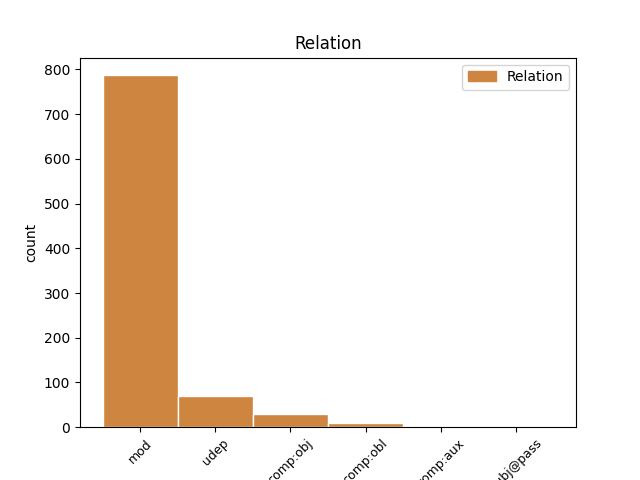
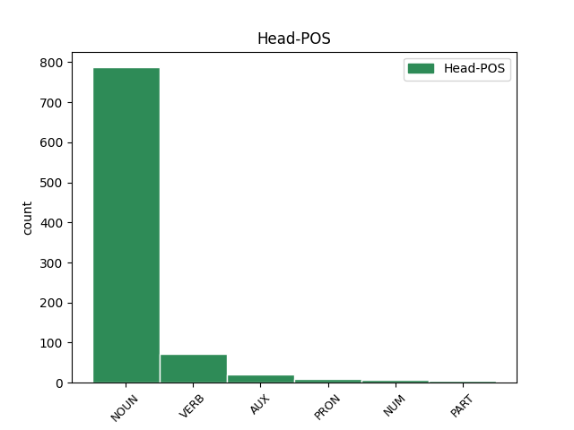
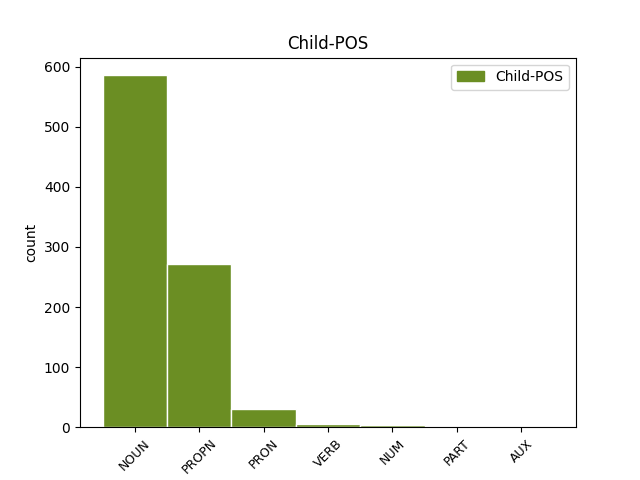

Distribution of features within this leaf



Agreement Rules sorted by frequency.
- When the dependent token is the modifer(mod) of the head token, and the head token is NOUN and the dependent token is NOUN.
1 அந்தக் _ _ _ _ 0 _ _ _
2 கட்டடங்களில் _ _ _ _ 0 _ _ _
3 ஏய் _ _ _ _ 0 _ _ _
4 இருந்து _ _ _ _ 0 _ _ _
5 பணியாற்றுகிற _ _ _ _ 0 _ _ _
6 மருத்துவர்கள் _ _ _ _ 0 _ _ _
7 , _ _ _ _ 0 _ _ _
8 அந்த _ _ _ _ 0 _ _ _
9 மருத்துவர்களுக்கு _ _ _ _ 0 _ _ _
10 உதவியாக _ _ _ _ 0 _ _ _
11 இருக்கிற _ _ _ _ 0 _ _ _
12 செவிலியர்கள் _ _ _ _ 0 _ _ _
13 உள்ளிட்ட _ _ _ _ 0 _ _ _
14 மற்ற _ _ _ _ 0 _ _ _
15 மருத்துவத்துறை மருத்துவத்துறை NOUN NNN-3SN-- Case=Nom|Gender=Neut|Number=Sing|Person=3 16 mod _ LTranslit=maruttuvatturai|Translit=maruttuvatturai
16 நண்பர்கள் நண்பர் NOUN NNN-3PA-- Animacy=Anim|Case=Nom|Gender=Com|Number=Plur|Person=3 0 _ _ _
17 அனைவரும் _ _ _ _ 0 _ _ _
18 ஏத் _ _ _ _ 0 _ _ _
19 ஓ _ _ _ _ 0 _ _ _
20 ஒரு _ _ _ _ 0 _ _ _
21 கடமை _ _ _ _ 0 _ _ _
22 ஆற்றுகிறோம் _ _ _ _ 0 _ _ _
23 என்று _ _ _ _ 0 _ _ _
24 இல்லாமல் _ _ _ _ 0 _ _ _
25 இந்தப் _ _ _ _ 0 _ _ _
26 பணி _ _ _ _ 0 _ _ _
27 நம்மை _ _ _ _ 0 _ _ _
28 வந்து _ _ _ _ 0 _ _ _
29 அடைந்த் _ _ _ _ 0 _ _ _
30 இருக்கிறது _ _ _ _ 0 _ _ _
31 . _ _ _ _ 0 _ _ _
1 தமிழ்நாடு தமிழ்நாடு PROPN NEN-3SN-- Case=Nom|Gender=Neut|Number=Sing|Person=3 2 mod _ LTranslit=tamilnāṭu|Translit=tamilnāṭu
2 அரசு அரசு NOUN NNN-3SN-- Case=Nom|Gender=Neut|Number=Sing|Person=3 0 _ _ _
3 தான் _ _ _ _ 0 _ _ _
4 அதைச் _ _ _ _ 0 _ _ _
5 செய்தது _ _ _ _ 0 _ _ _
6 . _ _ _ _ 0 _ _ _
1 அந்தக் _ _ _ _ 0 _ _ _
2 கட்டடங்களில் _ _ _ _ 0 _ _ _
3 ஏய் _ _ _ _ 0 _ _ _
4 இருந்து _ _ _ _ 0 _ _ _
5 பணியாற்றுகிற _ _ _ _ 0 _ _ _
6 மருத்துவர்கள் மருத்துவர் NOUN NNN-3PA-- Animacy=Anim|Case=Nom|Gender=Com|Number=Plur|Person=3 17 mod _ LTranslit=maruttuvar|SpaceAfter=No|Translit=maruttuvarkaḷ
7 , _ _ _ _ 0 _ _ _
8 அந்த _ _ _ _ 0 _ _ _
9 மருத்துவர்களுக்கு _ _ _ _ 0 _ _ _
10 உதவியாக _ _ _ _ 0 _ _ _
11 இருக்கிற _ _ _ _ 0 _ _ _
12 செவிலியர்கள் _ _ _ _ 0 _ _ _
13 உள்ளிட்ட _ _ _ _ 0 _ _ _
14 மற்ற _ _ _ _ 0 _ _ _
15 மருத்துவத்துறை _ _ _ _ 0 _ _ _
16 நண்பர்கள் _ _ _ _ 0 _ _ _
17 அனைவரும் அனைவர் PRON RpN-3PA-- Animacy=Anim|Case=Nom|Gender=Com|Number=Plur|Person=3|PronType=Prs 0 _ _ _
18 ஏத் _ _ _ _ 0 _ _ _
19 ஓ _ _ _ _ 0 _ _ _
20 ஒரு _ _ _ _ 0 _ _ _
21 கடமை _ _ _ _ 0 _ _ _
22 ஆற்றுகிறோம் _ _ _ _ 0 _ _ _
23 என்று _ _ _ _ 0 _ _ _
24 இல்லாமல் _ _ _ _ 0 _ _ _
25 இந்தப் _ _ _ _ 0 _ _ _
26 பணி _ _ _ _ 0 _ _ _
27 நம்மை _ _ _ _ 0 _ _ _
28 வந்து _ _ _ _ 0 _ _ _
29 அடைந்த் _ _ _ _ 0 _ _ _
30 இருக்கிறது _ _ _ _ 0 _ _ _
31 . _ _ _ _ 0 _ _ _
1 மேலும் _ _ _ _ 0 _ _ _
2 , _ _ _ _ 0 _ _ _
3 ரயில் ரயில் NOUN NNN-3SN-- Case=Nom|Gender=Neut|Number=Sing|Person=3 4 mod _ LTranslit=rayil|Translit=rayil
4 வருவதற்க் வரு VERB VzNF3SNAA Case=Nom|Gender=Neut|Number=Sing|Person=3|Polarity=Pos|Tense=Fut|VerbForm=Ger|Voice=Act 0 _ _ _
5 ஆன _ _ _ _ 0 _ _ _
6 எச்சரிக்கை _ _ _ _ 0 _ _ _
7 ஒலிய் _ _ _ _ 0 _ _ _
8 உம் _ _ _ _ 0 _ _ _
9 ஒலித்துக் _ _ _ _ 0 _ _ _
10 கொண்ட் _ _ _ _ 0 _ _ _
11 இருந்தது _ _ _ _ 0 _ _ _
12 . _ _ _ _ 0 _ _ _
1 ஏற்கெனவே _ _ _ _ 0 _ _ _
2 உச்ச _ _ _ _ 0 _ _ _
3 நீதிமன்றத் _ _ _ _ 0 _ _ _
4 தீர்ப்பு _ _ _ _ 0 _ _ _
5 தமிழகத்துக்கு _ _ _ _ 0 _ _ _
6 சாதகம் _ _ _ _ 0 _ _ _
7 ஆக _ _ _ _ 0 _ _ _
8 இருந்த _ _ _ _ 0 _ _ _
9 நிலையில் _ _ _ _ 0 _ _ _
10 , _ _ _ _ 0 _ _ _
11 அரசியல் _ _ _ _ 0 _ _ _
12 சாசன _ _ _ _ 0 _ _ _
13 பெஞ்சுக்கு பெஞ்ச் NOUN NND-3SN-- Case=Dat|Gender=Neut|Number=Sing|Person=3 14 udep _ LTranslit=peñc|Translit=peñcukku
14 மாற்றுவதற்கு மாற்று VERB VzDF3SNAA Case=Dat|Gender=Neut|Number=Sing|Person=3|Polarity=Pos|Tense=Fut|VerbForm=Ger|Voice=Act 0 _ _ _
15 முதல்வர் _ _ _ _ 0 _ _ _
16 கருணாநிதியின் _ _ _ _ 0 _ _ _
17 அனுமதியின் _ _ _ _ 0 _ _ _
18 பேரில் _ _ _ _ 0 _ _ _
19 ஏயே _ _ _ _ 0 _ _ _
20 தமிழக _ _ _ _ 0 _ _ _
21 அரசு _ _ _ _ 0 _ _ _
22 சார்பில் _ _ _ _ 0 _ _ _
23 ஆஜரான _ _ _ _ 0 _ _ _
24 வழக்கறிஞர் _ _ _ _ 0 _ _ _
25 எழுத்துப்பூர்வ _ _ _ _ 0 _ _ _
26 ஒப்புதல் _ _ _ _ 0 _ _ _
27 வழங்கிய் _ _ _ _ 0 _ _ _
28 உள்ளார் _ _ _ _ 0 _ _ _
29 . _ _ _ _ 0 _ _ _
1 போக்குவரத்து _ _ _ _ 0 _ _ _
2 வசதிகள் _ _ _ _ 0 _ _ _
3 இல்லாததால் _ _ _ _ 0 _ _ _
4 அரசு _ _ _ _ 0 _ _ _
5 அலுவலகங்களில் _ _ _ _ 0 _ _ _
6 உம் _ _ _ _ 0 _ _ _
7 வருகை வருகை NOUN NNN-3SN-- Case=Nom|Gender=Neut|Number=Sing|Person=3 9 comp:obj _ LTranslit=varukai|Translit=varukai
8 குறைவாகவே _ _ _ _ 0 _ _ _
9 இருந்தத் இரு VERB VzND3SNAA Case=Nom|Gender=Neut|Number=Sing|Person=3|Polarity=Pos|Tense=Past|VerbForm=Ger|Voice=Act 0 _ _ _
10 ஆக _ _ _ _ 0 _ _ _
11 அதிகார _ _ _ _ 0 _ _ _
12 வட்டாரங்கள் _ _ _ _ 0 _ _ _
13 தெரிவித்தன _ _ _ _ 0 _ _ _
14 . _ _ _ _ 0 _ _ _
1 இந்நிலையில் _ _ _ _ 0 _ _ _
2 தலிபான் _ _ _ _ 0 _ _ _
3 தீவிரவாதிகள் _ _ _ _ 0 _ _ _
4 குனார் _ _ _ _ 0 _ _ _
5 மாகாணத்தில் _ _ _ _ 0 _ _ _
6 உள்ள _ _ _ _ 0 _ _ _
7 அமெரிக்க _ _ _ _ 0 _ _ _
8 விமானப் _ _ _ _ 0 _ _ _
9 படை _ _ _ _ 0 _ _ _
10 தளத்தின் _ _ _ _ 0 _ _ _
11 மீத் _ _ _ _ 0 _ _ _
12 உம் _ _ _ _ 0 _ _ _
13 இந்திய _ _ _ _ 0 _ _ _
14 தன்னார்வத் _ _ _ _ 0 _ _ _
15 தொண்டு _ _ _ _ 0 _ _ _
16 நிறுவன _ _ _ _ 0 _ _ _
17 அலுவலகத்தின் _ _ _ _ 0 _ _ _
18 மீத் _ _ _ _ 0 _ _ _
19 உம் _ _ _ _ 0 _ _ _
20 ஞாயிற்றுக்கிழமை ஞாயிற்றுக்கிழமை NOUN NNN-3SN-- Case=Nom|Gender=Neut|Number=Sing|Person=3 21 udep _ LTranslit=ñāyirrukkilamai|Translit=ñāyirrukkilamai
21 தாக்குதல் தாக்குதல் NOUN NNN-3SN-- Case=Nom|Gender=Neut|Number=Sing|Person=3 0 _ _ _
22 நடத்தியத் _ _ _ _ 0 _ _ _
23 ஆகக் _ _ _ _ 0 _ _ _
24 கூறப் _ _ _ _ 0 _ _ _
25 படுகிறது _ _ _ _ 0 _ _ _
26 . _ _ _ _ 0 _ _ _
1 எனினும் _ _ _ _ 0 _ _ _
2 பொது _ _ _ _ 0 _ _ _
3 வேலைநிறுத்தத்தைய் _ _ _ _ 0 _ _ _
4 ஒட்டி _ _ _ _ 0 _ _ _
5 வன்முறைச் _ _ _ _ 0 _ _ _
6 சம்பவங்கள் சம்பவம் NOUN NNN-3PN-- Case=Nom|Gender=Neut|Number=Plur|Person=3 0 _ _ _
7 எதுவும் எது PRON RBN-3SN-- Case=Nom|Gender=Neut|Number=Sing|Person=3|PronType=Ind 6 mod _ LTranslit=etu|Translit=etuvum
8 நிகழ்ந்தத் _ _ _ _ 0 _ _ _
9 ஆக _ _ _ _ 0 _ _ _
10 தகவல் _ _ _ _ 0 _ _ _
11 இல்லை _ _ _ _ 0 _ _ _
12 . _ _ _ _ 0 _ _ _
1 தற்போது _ _ _ _ 0 _ _ _
2 புதிதாக _ _ _ _ 0 _ _ _
3 85 _ _ _ _ 0 _ _ _
4 பேர் _ _ _ _ 0 _ _ _
5 விடுவிக்க _ _ _ _ 0 _ _ _
6 ப்பட _ _ _ _ 0 _ _ _
7 உள்ளதைய் _ _ _ _ 0 _ _ _
8 அடுத்து _ _ _ _ 0 _ _ _
9 இந்த _ _ _ _ 0 _ _ _
10 ஆண்டு ஆண்டு NOUN NNN-3SN-- Case=Nom|Gender=Neut|Number=Sing|Person=3 17 udep _ LTranslit=āṇṭu|Translit=āṇṭu
11 மொத்தம் _ _ _ _ 0 _ _ _
12 213 _ _ _ _ 0 _ _ _
13 கைதிகளை _ _ _ _ 0 _ _ _
14 இந்தியா _ _ _ _ 0 _ _ _
15 விடுதலை _ _ _ _ 0 _ _ _
16 செய்த் _ _ _ _ 0 _ _ _
17 உள்ளது உள் AUX VZNT3SNAA Case=Nom|Gender=Neut|Number=Sing|Person=3|Polarity=Pos|VerbForm=Ger|Voice=Act 0 _ _ _
18 குறிப்பிடத் _ _ _ _ 0 _ _ _
19 தக்கது _ _ _ _ 0 _ _ _
20 . _ _ _ _ 0 _ _ _
1 இதனால் _ _ _ _ 0 _ _ _
2 சென்னையில் _ _ _ _ 0 _ _ _
3 வசிக்கும் _ _ _ _ 0 _ _ _
4 தென்மாவட்டங்களைச் _ _ _ _ 0 _ _ _
5 சேர்ந்தவர்கள் _ _ _ _ 0 _ _ _
6 ஜனவரி _ _ _ _ 0 _ _ _
7 12-ம் _ _ _ _ 0 _ _ _
8 தேதியன்றே _ _ _ _ 0 _ _ _
9 சொந்த _ _ _ _ 0 _ _ _
10 ஊர்களுக்குச் ஊர் NOUN NND-3SN-- Case=Dat|Gender=Neut|Number=Sing|Person=3 11 comp:obl _ LTranslit=ūr|Translit=ūrkaḷukkuc
11 செல்வதற்க் செல் VERB VzDF3SNAA Case=Dat|Gender=Neut|Number=Sing|Person=3|Polarity=Pos|Tense=Fut|VerbForm=Ger|Voice=Act 0 _ _ _
12 ஆக _ _ _ _ 0 _ _ _
13 ரயில்களில் _ _ _ _ 0 _ _ _
14 முன்பதிவு _ _ _ _ 0 _ _ _
15 செய்யக் _ _ _ _ 0 _ _ _
16 காத்திருந்தனர் _ _ _ _ 0 _ _ _
17 . _ _ _ _ 0 _ _ _
1 ஆமதாபாத் _ _ _ _ 0 _ _ _
2 , _ _ _ _ 0 _ _ _
3 ராஜ்கோட் _ _ _ _ 0 _ _ _
4 , _ _ _ _ 0 _ _ _
5 சூரத் _ _ _ _ 0 _ _ _
6 , _ _ _ _ 0 _ _ _
7 வதேதரா _ _ _ _ 0 _ _ _
8 , _ _ _ _ 0 _ _ _
9 ஜாம்நகர் _ _ _ _ 0 _ _ _
10 , _ _ _ _ 0 _ _ _
11 பாவ்நகர் _ _ _ _ 0 _ _ _
12 ஆகிய _ _ _ _ 0 _ _ _
13 6 _ _ _ _ 0 _ _ _
14 நகரங்களில் _ _ _ _ 0 _ _ _
15 மொத்தம் _ _ _ _ 0 _ _ _
16 உள்ள _ _ _ _ 0 _ _ _
17 555 _ _ _ _ 0 _ _ _
18 உள்ளாட்சி _ _ _ _ 0 _ _ _
19 இடங்களில் இடம் NOUN NNL-3PN-- Case=Loc|Gender=Neut|Number=Plur|Person=3 20 mod _ LTranslit=iṭam|Translit=iṭaṅkaḷil
20 444-ல் 444-ல் NUM U=L-3SN-A Case=Loc|Gender=Neut|Number=Sing|NumForm=Digit|Person=3|Polarity=Pos 0 _ _ _
21 பாஜக _ _ _ _ 0 _ _ _
22 வெற்றி _ _ _ _ 0 _ _ _
23 பெற்றுள்ளது _ _ _ _ 0 _ _ _
24 . _ _ _ _ 0 _ _ _
1 ராஜபட்சவ் _ _ _ _ 0 _ _ _
2 உம் _ _ _ _ 0 _ _ _
3 சிங்கள _ _ _ _ 0 _ _ _
4 அரச் _ _ _ _ 0 _ _ _
5 உம் _ _ _ _ 0 _ _ _
6 போர் _ _ _ _ 0 _ _ _
7 மரபுகளை _ _ _ _ 0 _ _ _
8 மீறி _ _ _ _ 0 _ _ _
9 மனிதநேயம் _ _ _ _ 0 _ _ _
10 அற்ற _ _ _ _ 0 _ _ _
11 முறையில் _ _ _ _ 0 _ _ _
12 போர்க் _ _ _ _ 0 _ _ _
13 குற்றம் _ _ _ _ 0 _ _ _
14 இழைத்த் _ _ _ _ 0 _ _ _
15 உள்ளனர் _ _ _ _ 0 _ _ _
16 என்று _ _ _ _ 0 _ _ _
17 ஜனநாயகத்தின் _ _ _ _ 0 _ _ _
18 மீது _ _ _ _ 0 _ _ _
19 நம்பிக்கை _ _ _ _ 0 _ _ _
20 உள்ள _ _ _ _ 0 _ _ _
21 சர்வதேச _ _ _ _ 0 _ _ _
22 நாடுகள் _ _ _ _ 0 _ _ _
23 கண்டித்து _ _ _ _ 0 _ _ _
24 வருகிற _ _ _ _ 0 _ _ _
25 நிலையில் _ _ _ _ 0 _ _ _
26 , _ _ _ _ 0 _ _ _
27 மத்திய _ _ _ _ 0 _ _ _
28 அரசு _ _ _ _ 0 _ _ _
29 அதற்கு _ _ _ _ 0 _ _ _
30 நேர்மாறாக _ _ _ _ 0 _ _ _
31 ஒரு _ _ _ _ 0 _ _ _
32 போர்க் _ _ _ _ 0 _ _ _
33 குற்றவாளிக்கு _ _ _ _ 0 _ _ _
34 சிவப்புக் _ _ _ _ 0 _ _ _
35 கம்பளம் கம்பளம் NOUN NNN-3SN-- Case=Nom|Gender=Neut|Number=Sing|Person=3 36 comp:aux _ LTranslit=kampaḷam|Translit=kampaḷam
36 விரிப்பது விரி AUX VzNF3SNAA Case=Nom|Gender=Neut|Number=Sing|Person=3|Polarity=Pos|Tense=Fut|VerbForm=Ger|Voice=Act 0 _ _ _
37 அத்தகைய _ _ _ _ 0 _ _ _
38 போர்க் _ _ _ _ 0 _ _ _
39 குற்றத்தில் _ _ _ _ 0 _ _ _
40 மத்திய _ _ _ _ 0 _ _ _
41 அரசின் _ _ _ _ 0 _ _ _
42 பங்களிப்பு _ _ _ _ 0 _ _ _
43 எத்தகையது _ _ _ _ 0 _ _ _
44 என்பதை _ _ _ _ 0 _ _ _
45 உறுதிப்படுத்துவத் _ _ _ _ 0 _ _ _
46 ஆக _ _ _ _ 0 _ _ _
47 உள்ளது _ _ _ _ 0 _ _ _
48 . _ _ _ _ 0 _ _ _
1 அணையை _ _ _ _ 0 _ _ _
2 உடைப்பது உடை VERB VzNF3SNAA Case=Nom|Gender=Neut|Number=Sing|Person=3|Polarity=Pos|Tense=Fut|VerbForm=Ger|Voice=Act 5 comp:obj _ LTranslit=uṭai|Translit=uṭaippatu
3 தான் _ _ _ _ 0 _ _ _
4 கேரளத்தின் _ _ _ _ 0 _ _ _
5 நோக்கம் நோக்கம் NOUN NNN-3SN-- Case=Nom|Gender=Neut|Number=Sing|Person=3 0 _ _ _
6 . _ _ _ _ 0 _ _ _
1 விமான _ _ _ _ 0 _ _ _
2 ஊழியர் _ _ _ _ 0 _ _ _
3 இடம் _ _ _ _ 0 _ _ _
4 ராணுவ _ _ _ _ 0 _ _ _
5 அதிகாரிகள் _ _ _ _ 0 _ _ _
6 உள் _ _ _ _ 0 _ _ _
7 ஒருவர் _ _ _ _ 0 _ _ _
8 சர்ச்சைக்குரிய _ _ _ _ 0 _ _ _
9 கருத்தைத் _ _ _ _ 0 _ _ _
10 தெரிவித்ததற்க் _ _ _ _ 0 _ _ _
11 ஆகவ் _ _ _ _ 0 _ _ _
12 ஏ _ _ _ _ 0 _ _ _
13 அவர்கள் அவர் PRON RpN-3PA-- Animacy=Anim|Case=Nom|Gender=Com|Number=Plur|Person=3|PronType=Prs 14 mod _ LTranslit=avar|Translit=avarkaḷ
14 அனைவரும் அனைவர் PRON RpN-3PA-- Animacy=Anim|Case=Nom|Gender=Com|Number=Plur|Person=3|PronType=Prs 0 _ _ _
15 இறக்கி _ _ _ _ 0 _ _ _
16 விடப் _ _ _ _ 0 _ _ _
17 பட்டத் _ _ _ _ 0 _ _ _
18 ஆகக் _ _ _ _ 0 _ _ _
19 கூறப் _ _ _ _ 0 _ _ _
20 படுகிறது _ _ _ _ 0 _ _ _
21 . _ _ _ _ 0 _ _ _
1 ஜாமா _ _ _ _ 0 _ _ _
2 வனப்பகுதிகளில் _ _ _ _ 0 _ _ _
3 இன்று _ _ _ _ 0 _ _ _
4 அதிகாலை _ _ _ _ 0 _ _ _
5 நிகழ்ந்த _ _ _ _ 0 _ _ _
6 இந்த _ _ _ _ 0 _ _ _
7 துப்பாக்கிச்சண்டையில் _ _ _ _ 0 _ _ _
8 தலையில் _ _ _ _ 0 _ _ _
9 குண்டு _ _ _ _ 0 _ _ _
10 பாய்ந்த _ _ _ _ 0 _ _ _
11 ஜாமா _ _ _ _ 0 _ _ _
12 போலீஸ் _ _ _ _ 0 _ _ _
13 நிலைய _ _ _ _ 0 _ _ _
14 அதிகாரி _ _ _ _ 0 _ _ _
15 சதானந்த் _ _ _ _ 0 _ _ _
16 சிங் சிங் PROPN NEN-3SH-- Case=Nom|Gender=Com|Number=Sing|Person=3|Polite=Form 20 mod _ LTranslit=ciṅ|Translit=ciṅ
17 சம்பவ _ _ _ _ 0 _ _ _
18 இடத்தில் _ _ _ _ 0 _ _ _
19 ஏயே _ _ _ _ 0 _ _ _
20 உயிரிழந்தத் உயிரிழ VERB VzND3SNAA Case=Nom|Gender=Neut|Number=Sing|Person=3|Polarity=Pos|Tense=Past|VerbForm=Ger|Voice=Act 0 _ _ _
21 ஆக _ _ _ _ 0 _ _ _
22 துணை _ _ _ _ 0 _ _ _
23 போலீஸ் _ _ _ _ 0 _ _ _
24 ஐஜி _ _ _ _ 0 _ _ _
25 பி.கே.பாண்டே _ _ _ _ 0 _ _ _
26 தெரிவித்தார் _ _ _ _ 0 _ _ _
27 . _ _ _ _ 0 _ _ _
1 குரல் _ _ _ _ 0 _ _ _
2 வாக்கெடுப்பு _ _ _ _ 0 _ _ _
3 மூலம் _ _ _ _ 0 _ _ _
4 ஒரு _ _ _ _ 0 _ _ _
5 வாக்கு _ _ _ _ 0 _ _ _
6 கூடுதலாக _ _ _ _ 0 _ _ _
7 பெற்று _ _ _ _ 0 _ _ _
8 எடியூரப்பா _ _ _ _ 0 _ _ _
9 அரசு _ _ _ _ 0 _ _ _
10 வெற்றி வெற்றி NOUN NNN-3SN-- Case=Nom|Gender=Neut|Number=Sing|Person=3 0 _ _ _
11 பெற்றுவிட்டத் பெறு AUX VZND3SNAA Case=Nom|Gender=Neut|Number=Sing|Person=3|Polarity=Pos|Tense=Past|VerbForm=Ger|Voice=Act 10 mod _ LTranslit=peru|Translit=perruviṭṭat
12 ஆக _ _ _ _ 0 _ _ _
13 அறிவித்தது _ _ _ _ 0 _ _ _
14 சட்ட _ _ _ _ 0 _ _ _
15 விரோதம் _ _ _ _ 0 _ _ _
16 ஆன _ _ _ _ 0 _ _ _
17 செயல் _ _ _ _ 0 _ _ _
18 . _ _ _ _ 0 _ _ _
1 இந்நிலையில் _ _ _ _ 0 _ _ _
2 தலிபான் _ _ _ _ 0 _ _ _
3 தீவிரவாதிகள் _ _ _ _ 0 _ _ _
4 குனார் _ _ _ _ 0 _ _ _
5 மாகாணத்தில் _ _ _ _ 0 _ _ _
6 உள்ள _ _ _ _ 0 _ _ _
7 அமெரிக்க _ _ _ _ 0 _ _ _
8 விமானப் _ _ _ _ 0 _ _ _
9 படை _ _ _ _ 0 _ _ _
10 தளத்தின் _ _ _ _ 0 _ _ _
11 மீத் _ _ _ _ 0 _ _ _
12 உம் _ _ _ _ 0 _ _ _
13 இந்திய _ _ _ _ 0 _ _ _
14 தன்னார்வத் _ _ _ _ 0 _ _ _
15 தொண்டு _ _ _ _ 0 _ _ _
16 நிறுவன _ _ _ _ 0 _ _ _
17 அலுவலகத்தின் _ _ _ _ 0 _ _ _
18 மீத் _ _ _ _ 0 _ _ _
19 உம் _ _ _ _ 0 _ _ _
20 ஞாயிற்றுக்கிழமை _ _ _ _ 0 _ _ _
21 தாக்குதல் தாக்குதல் NOUN NNN-3SN-- Case=Nom|Gender=Neut|Number=Sing|Person=3 0 _ _ _
22 நடத்தியத் நடத்து VERB VzND3SNAA Case=Nom|Gender=Neut|Number=Sing|Person=3|Polarity=Pos|Tense=Past|VerbForm=Ger|Voice=Act 21 mod _ LTranslit=naṭattu|Translit=naṭattiyat
23 ஆகக் _ _ _ _ 0 _ _ _
24 கூறப் _ _ _ _ 0 _ _ _
25 படுகிறது _ _ _ _ 0 _ _ _
26 . _ _ _ _ 0 _ _ _
1 ஐக்கிய _ _ _ _ 0 _ _ _
2 நாடுகள் _ _ _ _ 0 _ _ _
3 சபையின் _ _ _ _ 0 _ _ _
4 பாதுகாப்புக் _ _ _ _ 0 _ _ _
5 கவுன்சிலில் _ _ _ _ 0 _ _ _
6 இந்தியாவுக்கு _ _ _ _ 0 _ _ _
7 உறுப்பினர் _ _ _ _ 0 _ _ _
8 அந்தஸ்து அந்தஸ்து NOUN NNN-3SN-- Case=Nom|Gender=Neut|Number=Sing|Person=3 9 comp:obj _ LTranslit=antastu|Translit=antastu
9 கிடைப்பது கிடை AUX VZNF3SNAA Case=Nom|Gender=Neut|Number=Sing|Person=3|Polarity=Pos|Tense=Fut|VerbForm=Ger|Voice=Act 0 _ _ _
10 உறுதியாகி _ _ _ _ 0 _ _ _
11 விட்டது _ _ _ _ 0 _ _ _
12 . _ _ _ _ 0 _ _ _
1 உருக்கு _ _ _ _ 0 _ _ _
2 நிறுவன _ _ _ _ 0 _ _ _
3 வளர்ச்சி _ _ _ _ 0 _ _ _
4 மற்றும் _ _ _ _ 0 _ _ _
5 இத்தொழிலில் _ _ _ _ 0 _ _ _
6 மிட்டலின் _ _ _ _ 0 _ _ _
7 பங்களிப்பைப் _ _ _ _ 0 _ _ _
8 பாராட்டி _ _ _ _ 0 _ _ _
9 இவ்விருது விருது NOUN NNN-3SN-- Case=Nom|Gender=Neut|Number=Sing|Person=3 11 subj@pass _ LTranslit=virutu|Translit=ivvirutu
10 வழங்கப் _ _ _ _ 0 _ _ _
11 பட்டது படு AUX VZND3SNPA Case=Nom|Gender=Neut|Number=Sing|Person=3|Polarity=Pos|Tense=Past|VerbForm=Ger|Voice=Pass 0 _ _ _
12 . _ _ _ _ 0 _ _ _
1 பால் _ _ _ _ 0 _ _ _
2 ஹென்றி _ _ _ _ 0 _ _ _
3 மீது _ _ _ _ 0 _ _ _
4 உரிய _ _ _ _ 0 _ _ _
5 நடவடிக்கை நடவடிக்கை NOUN NNN-3SN-- Case=Nom|Gender=Neut|Number=Sing|Person=3 6 mod _ LTranslit=naṭavaṭikkai|Translit=naṭavaṭikkai
6 எடுப்பத் எடு PART TzNF3SN-A Case=Nom|Gender=Neut|Number=Sing|Person=3|Polarity=Pos|Tense=Fut|VerbForm=Ger 0 _ _ _
7 ஆகவ் _ _ _ _ 0 _ _ _
8 உம் _ _ _ _ 0 _ _ _
9 உறுதி _ _ _ _ 0 _ _ _
10 அளித்தது _ _ _ _ 0 _ _ _
11 . _ _ _ _ 0 _ _ _
Disagree Examples:
1 சென்னை _ _ _ _ 0 _ _ _
2 அருகே _ _ _ _ 0 _ _ _
3 ஸ்ரீ _ _ _ _ 0 _ _ _
4 பெரும்புதூரில் _ _ _ _ 0 _ _ _
5 கிரீன் _ _ _ _ 0 _ _ _
6 பீல்டு பீல்டு PROPN NEN-3SN-- Case=Nom|Gender=Neut|Number=Sing|Person=3 11 mod _ LTranslit=pīlṭu|Translit=pīlṭu
7 ( _ _ _ _ 0 _ _ _
8 நவீன _ _ _ _ 0 _ _ _
9 ) _ _ _ _ 0 _ _ _
10 விமான _ _ _ _ 0 _ _ _
11 நிலையத்துக்குக்க் நிலையம் NOUN NND-3SN-- Case=Dat|Gender=Neut|Number=Sing|Person=3 0 _ _ _
12 ஆன _ _ _ _ 0 _ _ _
13 நிலம் _ _ _ _ 0 _ _ _
14 யாருக்கும் _ _ _ _ 0 _ _ _
15 பாதிப்பு _ _ _ _ 0 _ _ _
16 இல்லாத _ _ _ _ 0 _ _ _
17 வகையில் _ _ _ _ 0 _ _ _
18 எடுக்கப் _ _ _ _ 0 _ _ _
19 படும் _ _ _ _ 0 _ _ _
20 என்று _ _ _ _ 0 _ _ _
21 முதல்வர் _ _ _ _ 0 _ _ _
22 கருணாநிதி _ _ _ _ 0 _ _ _
23 உறுதியளித்த் _ _ _ _ 0 _ _ _
24 உள்ளார் _ _ _ _ 0 _ _ _
25 . _ _ _ _ 0 _ _ _
1 சென்னை _ _ _ _ 0 _ _ _
2 அருகே _ _ _ _ 0 _ _ _
3 ஸ்ரீ _ _ _ _ 0 _ _ _
4 பெரும்புதூரில் _ _ _ _ 0 _ _ _
5 கிரீன் _ _ _ _ 0 _ _ _
6 பீல்டு _ _ _ _ 0 _ _ _
7 ( _ _ _ _ 0 _ _ _
8 நவீன _ _ _ _ 0 _ _ _
9 ) _ _ _ _ 0 _ _ _
10 விமான _ _ _ _ 0 _ _ _
11 நிலையத்துக்குக்க் _ _ _ _ 0 _ _ _
12 ஆன _ _ _ _ 0 _ _ _
13 நிலம் _ _ _ _ 0 _ _ _
14 யாருக்கும் யார் PRON RBD-3SA-- Animacy=Anim|Case=Dat|Gender=Com|Number=Sing|Person=3|PronType=Ind 15 mod _ LTranslit=yār|Translit=yārukkum
15 பாதிப்பு பாதிப்பு NOUN NNN-3SN-- Case=Nom|Gender=Neut|Number=Sing|Person=3 0 _ _ _
16 இல்லாத _ _ _ _ 0 _ _ _
17 வகையில் _ _ _ _ 0 _ _ _
18 எடுக்கப் _ _ _ _ 0 _ _ _
19 படும் _ _ _ _ 0 _ _ _
20 என்று _ _ _ _ 0 _ _ _
21 முதல்வர் _ _ _ _ 0 _ _ _
22 கருணாநிதி _ _ _ _ 0 _ _ _
23 உறுதியளித்த் _ _ _ _ 0 _ _ _
24 உள்ளார் _ _ _ _ 0 _ _ _
25 . _ _ _ _ 0 _ _ _
1 கர்நாடகத்தில் _ _ _ _ 0 _ _ _
2 உம் _ _ _ _ 0 _ _ _
3 , _ _ _ _ 0 _ _ _
4 ஆந்திரத்தில் _ _ _ _ 0 _ _ _
5 உம் _ _ _ _ 0 _ _ _
6 கிரீன் _ _ _ _ 0 _ _ _
7 பீல்டு பீல்டு PROPN NEN-3SN-- Case=Nom|Gender=Neut|Number=Sing|Person=3 9 mod _ LTranslit=pīlṭu|Translit=pīlṭu
8 விமான _ _ _ _ 0 _ _ _
9 நிலையங்களை நிலையம் NOUN NNA-3PN-- Case=Acc|Gender=Neut|Number=Plur|Person=3 0 _ _ _
10 அமைத்து _ _ _ _ 0 _ _ _
11 தமிழகத்தை _ _ _ _ 0 _ _ _
12 முந்திக் _ _ _ _ 0 _ _ _
13 கொண்டு _ _ _ _ 0 _ _ _
14 விட்டனர் _ _ _ _ 0 _ _ _
15 . _ _ _ _ 0 _ _ _
1 ஆனால் _ _ _ _ 0 _ _ _
2 , _ _ _ _ 0 _ _ _
3 இந்த _ _ _ _ 0 _ _ _
4 வரிசையில் _ _ _ _ 0 _ _ _
5 சென்னை _ _ _ _ 0 _ _ _
6 அருகே _ _ _ _ 0 _ _ _
7 அமைக்க _ _ _ _ 0 _ _ _
8 ப்பட _ _ _ _ 0 _ _ _
9 உள்ள _ _ _ _ 0 _ _ _
10 கிரீன் _ _ _ _ 0 _ _ _
11 பீல்டு பீல்டு PROPN NEN-3SN-- Case=Nom|Gender=Neut|Number=Sing|Person=3 13 mod _ LTranslit=pīlṭu|Translit=pīlṭu
12 விமான _ _ _ _ 0 _ _ _
13 நிலையத்துக்கு நிலையம் NOUN NND-3SN-- Case=Dat|Gender=Neut|Number=Sing|Person=3 0 _ _ _
14 பாதிப்பு _ _ _ _ 0 _ _ _
15 ஏற்படும் _ _ _ _ 0 _ _ _
16 வகையில் _ _ _ _ 0 _ _ _
17 அதிமுக _ _ _ _ 0 _ _ _
18 பொதுச் _ _ _ _ 0 _ _ _
19 செயலாளர் _ _ _ _ 0 _ _ _
20 ஜெயலலிதா _ _ _ _ 0 _ _ _
21 , _ _ _ _ 0 _ _ _
22 பா.ம.க. _ _ _ _ 0 _ _ _
23 நிறுவனர் _ _ _ _ 0 _ _ _
24 ராமதாஸ் _ _ _ _ 0 _ _ _
25 ஆகியோர் _ _ _ _ 0 _ _ _
26 போராட்ட _ _ _ _ 0 _ _ _
27 அறிவிப்பை _ _ _ _ 0 _ _ _
28 வெளியிட்ட் _ _ _ _ 0 _ _ _
29 உள்ளனர் _ _ _ _ 0 _ _ _
30 . _ _ _ _ 0 _ _ _
1 மத்திய _ _ _ _ 0 _ _ _
2 அரசு _ _ _ _ 0 _ _ _
3 புதிதாகக் _ _ _ _ 0 _ _ _
4 கொண்டுவந்த் _ _ _ _ 0 _ _ _
5 உள்ள _ _ _ _ 0 _ _ _
6 தொல்பொருள் _ _ _ _ 0 _ _ _
7 ஆய்வுச் _ _ _ _ 0 _ _ _
8 சட்டம் _ _ _ _ 0 _ _ _
9 மக்களின் மக்கள் NOUN NNG-3PA-- Animacy=Anim|Case=Gen|Gender=Com|Number=Plur|Person=3 11 mod _ LTranslit=makkaḷ|Translit=makkaḷin
10 அடிப்படை _ _ _ _ 0 _ _ _
11 உரிமைகளைப் உரிமை NOUN NNA-3PN-- Case=Acc|Gender=Neut|Number=Plur|Person=3 0 _ _ _
12 பறிக்கும் _ _ _ _ 0 _ _ _
13 வகையில் _ _ _ _ 0 _ _ _
14 உள்ளதால் _ _ _ _ 0 _ _ _
15 அதை _ _ _ _ 0 _ _ _
16 திரும்பப் _ _ _ _ 0 _ _ _
17 பெற _ _ _ _ 0 _ _ _
18 வேண்டும் _ _ _ _ 0 _ _ _
19 என _ _ _ _ 0 _ _ _
20 மதிமுக _ _ _ _ 0 _ _ _
21 பொதுச்செயலர் _ _ _ _ 0 _ _ _
22 வைகோ _ _ _ _ 0 _ _ _
23 கோரிக்கை _ _ _ _ 0 _ _ _
24 விடுத்த் _ _ _ _ 0 _ _ _
25 உள்ளார் _ _ _ _ 0 _ _ _
26 . _ _ _ _ 0 _ _ _